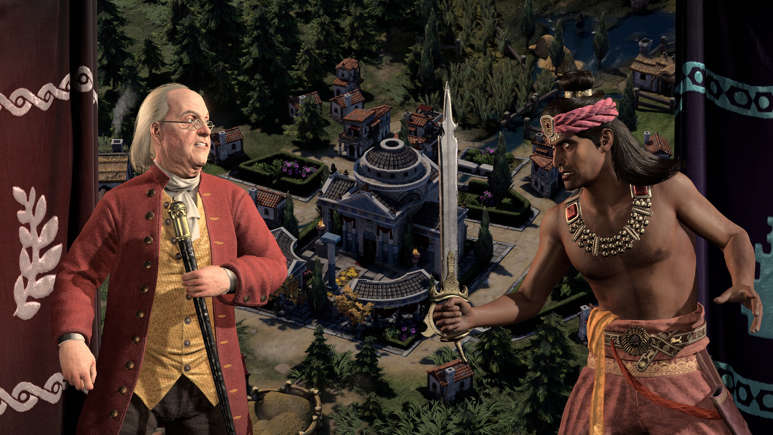

Nobody should envy Firaxis. Once a decade or so, the legendary strategy game developer is asked to reinvent Civilization, a video game series that has been absent of any tangible weak points for quite some time. Nearly every entry has presented different flavors of that turn-based 4X recipe, but it's hard to say that any one is substantially superior to the others. So, that is the burden that Civilization 7 carries with it. Here is a game that, after playing through the first of its three distinct eras, is shaping up to be very good, but the fact that it’s introducing a huge number of major tweaks and reinterpretations that—in both small ways and big—provide a brand-new way to play Civ means that it asks of its veteran players to enter with an open mind.
If you are new to this series, please know that the basic colors of Civilization 7 adhere to the time-tested formula: telling the story of humanity, one turn and one hex at a time. You begin nurturing a teensy village, armed with club wielding warriors and torchlight, and evolve it into a globe-bestriding empire by balancing their cultural, scientific, diplomatic, and warfighting needs. Countless subsystems are woven into this pursuit, and when Civilization is at its best, it’s easy to enter something of a psychedelic zen as you remix human history. The marquee new feature of Civilization 7, which we detailed at length in IGN's original preview last August. Rather than selecting one nation and charting a path to victory, you’ll wield control of a consistent leader, but you’ll switch from your original civilization to two others throughout history—which is divided into three ages: Antiquity, Exploration, and Modern—before a win can be secured.
Some Civilization fans were understandably nervous about this pivot. It's a big change! One of the things people love most about the previous six games and their spinoffs is their ability to tell strange and funny stories, creating a timeline where, say, the dogmatically Catholic people of China build the Parthenon. Will that still be possible if we're abandoning our flag when the calendar tips over? After experiencing the change between the age of Antiquity to Exploration myself, I can say with certainty that this new approach will be intriguing for Civ-heads that love getting under the hood. There are so many distinct civilizations to choose from, and in tandem with your chosen leader, if you play smart you’ll will be able to uncover some devastating wombo combos. (For example, a highly expansionist Augustus Caesar, who shepherded the proud Egyptians in Antiquity, might find a perfect home with the Mongols during the Exploration Age.) It brings to mind the compositional choices one makes when assembling a League of Legends roster, but with the world at your feet.
The same thing can be said about the way Firaxis has refreshed its diplomacy system, which again chips away at some thematic richness in service of gameplay. If you are a veteran of Civilization 6, you are likely familiar with how mercurial the other barons on the map could be, and the exorbitant fees they'd charge for simple strategic agreements like open borders. All of that has been stripped away. Diplomacy in Civilization 7, like everything else, has become a currency. You accrue and spend "influence points" in the same way you might have spent faith or gold in generations past, and the accords available on the diplomacy screen all have non-negotiable costs. Want a research partnership? Or a denouncement? The price is on the menu. Some might miss the roundabout negotiations of earlier games, but personally, I think this streamlining is long overdue.
In fact, outside of the radical switch to a three-act structure, much of Civilization 7's other big changes are remarkably subtle, and seem designed to iron out some of the murky micro-decisions that tend to gum up a campaign. Remember how, since the switch to only allowing one unit per tile in Civ 5, mustering an army required you to line up an unwieldy battalion that would inevitably become chokepointed by its own mass? Now you can rally multiple units on an Army Commander and use them to dictate group orders—like a powerful combined assault—on a single target, which should hopefully make military action less of a grind. (Those commanders are now the only units that can be leveled up, allowing you to tailor different ends of your fighting force.)
A change that sounded like a bigger deal than it actually turns out to be is the elimination of worker units. In Civilization 7, your cities lavishly sprawl outwards, upgrading tiles of your choice as they grow. You know the downtime in the early game where you're mostly waiting around for your population to grow? This time you’re supplied with progression goals for your nation's economic, cultural, scientific, and military pursuits. If you complete these you can unlock bonuses at the end of the age, and that makes sure that you always have something to do instead of mashing the end turn button.
The goal, from what I can tell, is to ensure that even in the doldrums, Civilization 7 has the capacity to surprise us. The best illustration of this might be the narrative choices threaded across the campaign, where your leader might encounter some flavor text and a branching pair of dialogue options where both are tied to a short-term boon. (In one early game instance, I found an abandoned mine and could either strip it for gold or convert it into a permanent silver resource on the map.) It is the slightest dusting of Crusader Kings-style roleplaying in a series that has typically steered away from any inkling of morality. I can't wait to see what ethical quandaries the modern age holds.
I played my Civilization 7 campaign into the Exploration Age, when the map begins to open up for startup empires to venture beyond their home continents. Units can begin to trek across the ocean with wooden fleets, and I was pleased to see that, just off my native shores, enticing archipelagos were ripe for the taking. It was interesting to see how quickly my priorities changed between the eras, and how incentivized I suddenly became to explore the open seas. It makes me wonder if the Antiquity, Exploration, and Modern Ages will function more like siloed gameplay experiences, and given how Civilization 7 allows you to boot up a run at the beginning of each of them, I imagine that is Firaxis's intent.
But even after 10 hours, I was still scratching the surface of all Civilization 7 had to offer. For instance: On the leader selection screen, there is a meta-progression system built into its DNA, allowing you to slowly unlock perks for the characters you invest the most time in. That represents a huge shakeup to how we’ve all played Civ all this time. How will all of these pieces come together? The answers will be revealed in modernity, and beyond.